|
 |
 |
Puntos de
Inflexión Ecológica
- Cómo funcionan?
- Transformando círculos viciosos a círculos virtuosos
- Ingredientes para el éxito
- Elaboren sus propios Puntos de Inflexión Ecológica
Historias por Región
Historias por Tema
- Agricultura
- Agua y Cuencas
- Bosques
- Ecosistemas Urbanos
- Educación
- Energía
- Negocios
- Pesquerías
- Salud Pública
Videos Cortos
- Salvando un arrecife coral y una pesquería
(Filipinas) - Revitalizando vecindades urbanas con jardines comunitarios
(Nueva York) - Revirtiendo la deforestación tropical con bosques comunitarios
(Thailandia) - Rellenando aguas subterráneas con captación pluvial
(Rajastán, India) - Escapando la trampa de pesticidas
(India)
Explicando el Éxito
- Salvando un arrecife coral y una pesquería
(Filipinas) - Revitalizando vecindades urbanas con jardines comunitarios
(Nueva York) - Revirtiendo la deforestación tropical con bosques comunitarios
(Thailandia) - Rellenando aguas subterráneas con captación pluvial
(Rajastán, India) - Escapando la trampa de pesticidas
(India)

Ecología Humana: Presenta los principios de la ecología humana que sirven de fundamento a los Puntos de Inflexión Ecológica
Tailandia - Provincia Nonthaburi - Reutilización y Reciclaje en el Templo Wat Suan Kaew
- Breve: Un templo combina la reutilización creativa y el reciclaje, la agricultura sustentable y programas sociales.
- Lea la historia detallada
- Fotos tomadas por Amanda Suutari - Todas las fotos están disponibles para descargarse gratis; favor de atribuir a la fotógrafa y al sitio de Internet.
- Pulse sobre la foto para ver los detalles.

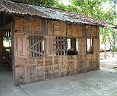
Crate Structure

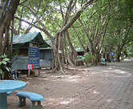
Monk Accommodations

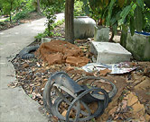
Salvaged Materials

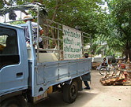
Donation Truck

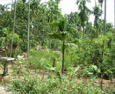
Farm

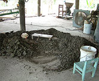
Sewage Processing

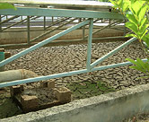
Sewage Processing

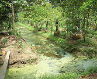
Irrigation Canals

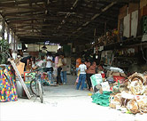
Supermarket Scene

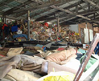
Supermarket Scene

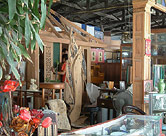
Supermarket Scene

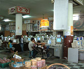
Supermarket Scene

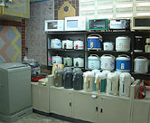
Supermarket Scene

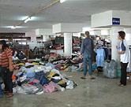
Supermarket Scene

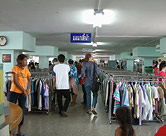
Supermarket Scene

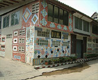
Market Building

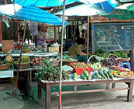
Farm Produce

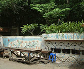
Porcelain Tiles

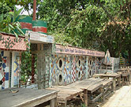
Mosaic Wall

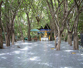
Outdoor Sanctuary

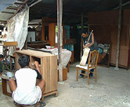
Refurbishing Cabinet

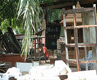
Salvaged Items

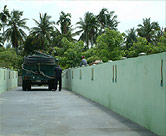
Sewage Truck

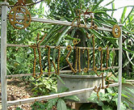
Bike Part Sign

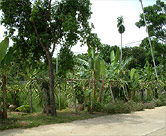
Temple Farm

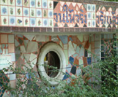
Tire Peep Hole

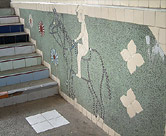
Salvaged Tiles

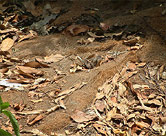
Mattresses Mulch

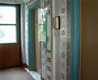
Supermarket

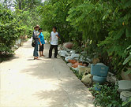
Salvaged Toilets

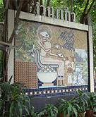
Mosaic

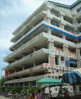
Salvaged Tiles

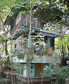
Monk Accommodation

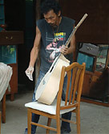
Refurbishing Guitar

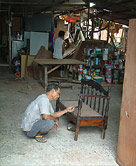
Refurbishing Chair